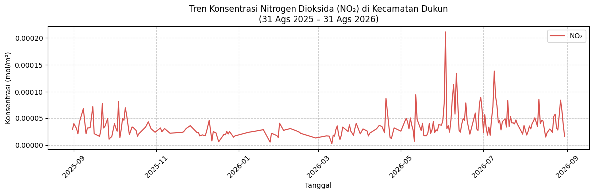
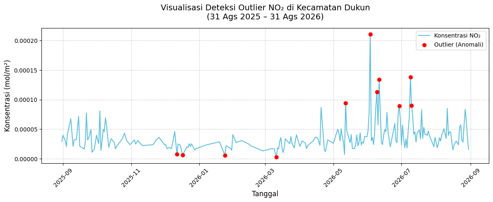
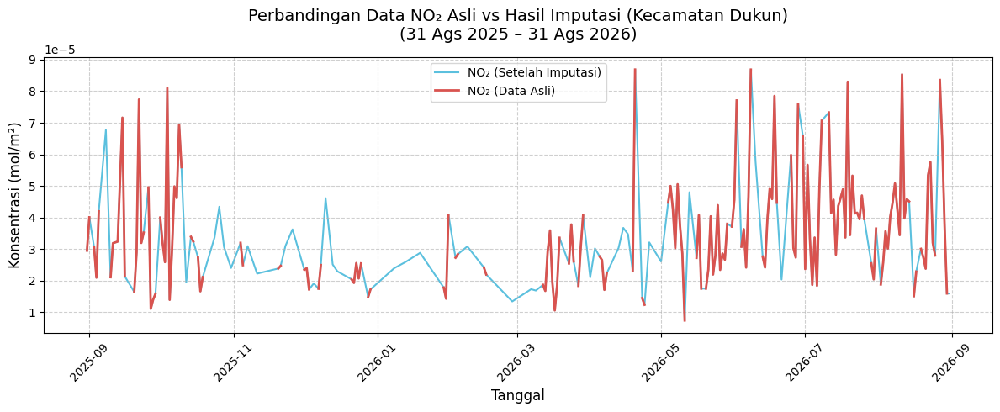

Crawling Data kualitas udara di wilayah Dukun, Gresik#
Business Understanding#
Latar Belakang dan Tujuan Proyek#
Tujuan utama dari proyek sains data ini adalah:
“Menganalisis kualitas udara di wilayah Gresik berdasarkan perubahan konsentrasi polutan NO₂ secara temporal selama periode 1 tahun terakhir menggunakan data satelit penginderaan jauh Sentinel-5P.”
Tujuan di atas dirumuskan secara spesifik agar mencakup komponen penting dalam proyek sains data:
Data: Konsentrasi polutan (NO₂)
Periode waktu: 1 tahun terakhir (31 Agustus 2025 hingga 31 Agustus 2026)
Wilayah: Kecamatan Dukun, Gresik (berdasarkan batas koordinat wilayah)
Analisis: Analisis temporal (Time Series)
Output: Visualisasi data dan penarikan kesimpulan terkait tren kualitas udara
Data Understanding#
Berdasarkan ketersediaan instrumen (band) pada satelit Sentinel-5P yang digunakan dalam proyek ini, kita akan berfokus pada NO₂
Parameter |
Nama Polutan |
Mengapa Penting? |
Sumber Umum |
|---|---|---|---|
NO₂ |
Nitrogen Dioxide |
Berkaitan erat dengan pembakaran kendaraan bermotor dan aktivitas kawasan industri. |
Asap kendaraan bermotor, pabrik industri, dan pembangkit listrik. |
Eksplorasi data - Analisis kualitas udara wilayah Gresik#
Sumber Data (Data Source)#
Data kualitas udara yang digunakan bersumber dari pantauan satelit penginderaan jauh Sentinel-5P (S5P) Precursor. Satelit ini dilengkapi instrumen TROPOMI yang sangat sensitif dalam mendeteksi komposisi gas di atmosfer. Pengambilan data dilakukan secara komputasional (crawling) menggunakan platform Copernicus Data Space melalui pustaka/API openeo.
Spesifikasi Pengambilan Data (Data Scope)#
Cakupan Spasial (Spatial Extent): Pengambilan data difokuskan secara eksklusif pada Area of Interest (AOI) Kecamatan Dukun, Gresik. Ekstraksi menggunakan Bounding Box koordinat yang mencakup wilayah daratan dan pesisir sekitar Gresik.
Cakupan Temporal (Temporal Extent): Data historis ditarik mulai dari 31 Agustus 2025 hingga 31 Agustus 2026 guna menangkap variasi harian, bulanan, maupun musiman selama lebih dari 1 tahun terakhir.
Agregasi (Aggregation):
Temporal: Data harian diagregasi dengan menghitung nilai rata-rata (daily mean) untuk menghindari duplikasi observasi pada hari yang sama.
Spasial: Seluruh nilai piksel satelit yang jatuh di dalam batas koordinat Dukun, Gresik dirata-ratakan (spatial mean), menghasilkan satu nilai representatif untuk keseluruhan area pada hari tersebut.
Deskripsi Variabel (Features Description)#
Terdapat variabel polutan utama (NO₂) dan satu variabel waktu yang diekstrak:
NO₂ (Nitrogen Dioksida): Indikator pembakaran bahan bakar, relevan untuk memantau emisi lalu lintas dan kawasan industri di Gresik.
Date (Tanggal): Indeks waktu perekaman satelit dalam format YYYY-MM-DD.
Pertimbangan Kualitas Data#
Dalam memproses data satelit ini, beberapa hal perlu diperhatikan:
Missing Values (Kekosongan Data): Tutupan awan yang tebal dapat menghalangi sensor satelit merekam permukaan bumi secara sempurna, menghasilkan baris data kosong (NaN).
Outliers (Pencilan): Nilai polutan yang melompat drastis pada hari tertentu harus dicek apakah itu anomali sensor, atau benar-benar ada fenomena nyata (misal: kebakaran atau lonjakan aktivitas pabrik).
Crawling Data#
# Install library untuk crawling dan manipulasi data
!pip install openeo netCDF4 pandas numpy
Requirement already satisfied: openeo in c:\users\faziz\appdata\local\programs\python\python39\lib\site-packages (0.51.0)
Requirement already satisfied: netCDF4 in c:\users\faziz\appdata\local\programs\python\python39\lib\site-packages (1.7.2)
Requirement already satisfied: pandas in c:\users\faziz\appdata\local\programs\python\python39\lib\site-packages (2.3.3)
Requirement already satisfied: numpy in c:\users\faziz\appdata\local\programs\python\python39\lib\site-packages (2.0.2)
Requirement already satisfied: requests>=2.26.0 in c:\users\faziz\appdata\local\programs\python\python39\lib\site-packages (from openeo) (2.32.5)
Requirement already satisfied: urllib3>=1.9.0 in c:\users\faziz\appdata\local\programs\python\python39\lib\site-packages (from openeo) (2.6.3)
Requirement already satisfied: shapely>=1.6.4 in c:\users\faziz\appdata\local\programs\python\python39\lib\site-packages (from openeo) (2.0.7)
Requirement already satisfied: xarray<2025.01.2,>=0.12.3 in c:\users\faziz\appdata\local\programs\python\python39\lib\site-packages (from openeo) (2024.7.0)
Requirement already satisfied: pystac>=1.5.0 in c:\users\faziz\appdata\local\programs\python\python39\lib\site-packages (from openeo) (1.10.1)
Requirement already satisfied: deprecated>=1.2.12 in c:\users\faziz\appdata\local\programs\python\python39\lib\site-packages (from openeo) (1.3.1)
Requirement already satisfied: oschmod>=0.3.12 in c:\users\faziz\appdata\local\programs\python\python39\lib\site-packages (from openeo) (0.3.12)
Requirement already satisfied: geopandas>=0.14 in c:\users\faziz\appdata\local\programs\python\python39\lib\site-packages (from openeo) (1.0.1)
Requirement already satisfied: python-dateutil>=2.8.2 in c:\users\faziz\appdata\local\programs\python\python39\lib\site-packages (from pandas) (2.9.0.post0)
Requirement already satisfied: pytz>=2020.1 in c:\users\faziz\appdata\local\programs\python\python39\lib\site-packages (from pandas) (2025.2)
Requirement already satisfied: tzdata>=2022.7 in c:\users\faziz\appdata\local\programs\python\python39\lib\site-packages (from pandas) (2025.3)
Requirement already satisfied: packaging>=23.1 in c:\users\faziz\appdata\local\programs\python\python39\lib\site-packages (from xarray<2025.01.2,>=0.12.3->openeo) (26.0)
Requirement already satisfied: cftime in c:\users\faziz\appdata\local\programs\python\python39\lib\site-packages (from netCDF4) (1.6.4.post1)
Requirement already satisfied: certifi in c:\users\faziz\appdata\local\programs\python\python39\lib\site-packages (from netCDF4) (2026.1.4)
Requirement already satisfied: wrapt<3,>=1.10 in c:\users\faziz\appdata\local\programs\python\python39\lib\site-packages (from deprecated>=1.2.12->openeo) (2.4.0)
Requirement already satisfied: pyogrio>=0.7.2 in c:\users\faziz\appdata\local\programs\python\python39\lib\site-packages (from geopandas>=0.14->openeo) (0.11.1)
Requirement already satisfied: pyproj>=3.3.0 in c:\users\faziz\appdata\local\programs\python\python39\lib\site-packages (from geopandas>=0.14->openeo) (3.6.1)
Requirement already satisfied: pywin32 in c:\users\faziz\appdata\local\programs\python\python39\lib\site-packages (from oschmod>=0.3.12->openeo) (311)
Requirement already satisfied: six>=1.5 in c:\users\faziz\appdata\local\programs\python\python39\lib\site-packages (from python-dateutil>=2.8.2->pandas) (1.17.0)
Requirement already satisfied: charset_normalizer<4,>=2 in c:\users\faziz\appdata\local\programs\python\python39\lib\site-packages (from requests>=2.26.0->openeo) (3.4.4)
Requirement already satisfied: idna<4,>=2.5 in c:\users\faziz\appdata\local\programs\python\python39\lib\site-packages (from requests>=2.26.0->openeo) (3.11)
# Koneksi ke Server Copernicus (OpenEO)
import openeo
connection = openeo.connect("openeo.dataspace.copernicus.eu").authenticate_oidc()
Authenticated using refresh token.
Eksekusi Crawling Data Satelit (NO₂)#
# Polygon Wilayah Kecamatan Dukun
dukun_aoi = {
"type": "Polygon",
"coordinates": [
[
[112.4176093, -6.9520018],
[112.4965324, -6.9660151],
[112.5251805, -6.9804942],
[112.525, -7.0],
[112.51, -7.02],
[112.48, -7.025],
[112.44, -7.015],
[112.3681227, -6.9870542],
[112.381574, -6.9581535],
[112.4176093, -6.9520018]
]
]
}
# Bounding Box Kecamatan Dukun (Diambil dari nilai min/max koordinat di atas)
bbox_dukun = {
"west": 112.3681227, # Bujur terkecil (Paling Barat)
"south": -7.025, # Lintang terkecil (Paling Selatan)
"east": 112.5251805, # Bujur terbesar (Paling Timur)
"north": -6.9520018 # Lintang terbesar (Paling Utara)
}
rentang_waktu = ["2025-08-31", "2026-08-31"]
# Fungsi bantuan untuk memudahkan load dan agregasi
def crawl_polutan(band_name):
cube = connection.load_collection(
"SENTINEL_5P_L2",
temporal_extent=rentang_waktu,
spatial_extent=bbox_dukun, # Diubah menggunakan bbox_dukun
bands=[band_name]
)
# Agregasi waktu (rata-rata harian)
daily = cube.aggregate_temporal_period(reducer="mean", period="day")
# Agregasi spasial (rata-rata di dalam poligon GeoJSON Dukun)
aoi_mean = daily.aggregate_spatial(reducer="mean", geometries=dukun_aoi) # Diubah menggunakan dukun_aoi
return aoi_mean
# Menyiapkan proses (data cube) untuk masing-masing polutan di Dukun
s5p_NO2 = crawl_polutan("NO2")
# Eksekusi job dan simpan ke file NetCDF (.nc)
print("Memulai NO2...")
s5p_NO2.execute_batch(title="NO2_Dukun", outputfile="NO2_Dukun.nc")
print("file selesai!")
Memulai NO2...
0:00:00 Job 'j-2609130803054dd08212f2d0cf54d584': send 'start'
0:00:04 Job 'j-2609130803054dd08212f2d0cf54d584': queued (progress 0%)
0:00:09 Job 'j-2609130803054dd08212f2d0cf54d584': queued (progress 0%)
0:00:16 Job 'j-2609130803054dd08212f2d0cf54d584': queued (progress 0%)
0:00:24 Job 'j-2609130803054dd08212f2d0cf54d584': queued (progress 0%)
Transformasi Data Mentah (NetCDF ke CSV)#
File keluaran Copernicus berformat .nc bersifat multidimensi. Kita perlu mengekstrak array konsentrasi polutan dan waktunya, lalu mengonversinya menjadi DataFrame dua dimensi (.csv) agar siap pakai untuk analisis lanjutan.
import netCDF4
import pandas as pd
# Daftar polutan dan nama file .nc yang HANYA ADA NO2
polutan_list = ["NO2"]
file_nc = ["NO2_Dukun.nc"]
dfs_list = []
for polutan, file in zip(polutan_list, file_nc):
try:
ds = netCDF4.Dataset(file)
kadar = ds.variables[polutan][:].squeeze()
# Ekstrak tanggal
time_var = ds.variables["t"]
try:
dates = netCDF4.num2date(time_var[:], units=time_var.units)
except Exception:
dates = time_var[:]
new_dates = [d.strftime('%Y-%m-%d') for d in dates]
df_temp = pd.DataFrame({
"date": pd.to_datetime(new_dates),
polutan: kadar
})
dfs_list.append(df_temp)
print(f"Berhasil mengekstrak {polutan} (Jumlah data: {len(df_temp)} hari)")
except Exception as e:
print(f"Error memproses file {file}: {e}")
# Proses langsung menyimpan (tanpa merge karena cuma 1 file)
if dfs_list:
df_hasil = dfs_list[0] # Ambil dataframe NO2
df_hasil = df_hasil.sort_values('date').reset_index(drop=True)
df_hasil['date'] = df_hasil['date'].dt.strftime('%Y-%m-%d')
# Export ke CSV
nama_file_akhir = "NO2_Dukun_Terkini.csv"
df_hasil.to_csv(nama_file_akhir, index=False)
print(f"\nSUKSES: Data berhasil dikonversi ke -> {nama_file_akhir}")
# Tampilkan 5 data awal
display(df_hasil.head())
else:
print("Gagal mengekstrak data dari file NetCDF.")
Berhasil mengekstrak NO2 (Jumlah data: 218 hari)
SUKSES: Data berhasil dikonversi ke -> NO2_Dukun_Terkini.csv
| date | NO2 | |
|---|---|---|
| 0 | 2025-08-31 | 0.000029 |
| 1 | 2025-09-01 | 0.000040 |
| 2 | 2025-09-03 | 0.000031 |
| 3 | 2025-09-04 | 0.000021 |
| 4 | 2025-09-05 | 0.000042 |
Visualisasi Hasil dengan Grafik Kartesius#
Menampilkan grafik kartesius (line plot) deret waktu konsentrasi polutan kualitas udara (NO₂, CO, SO₂, O₃) di area Kabupaten Gresik selama rentang waktu lebih dari 1 tahun terakhir.
!pip install matplotlib
Requirement already satisfied: matplotlib in c:\users\faziz\appdata\local\programs\python\python39\lib\site-packages (3.9.4)
Requirement already satisfied: contourpy>=1.0.1 in c:\users\faziz\appdata\local\programs\python\python39\lib\site-packages (from matplotlib) (1.3.0)
Requirement already satisfied: cycler>=0.10 in c:\users\faziz\appdata\local\programs\python\python39\lib\site-packages (from matplotlib) (0.12.1)
Requirement already satisfied: fonttools>=4.22.0 in c:\users\faziz\appdata\local\programs\python\python39\lib\site-packages (from matplotlib) (4.60.2)
Requirement already satisfied: kiwisolver>=1.3.1 in c:\users\faziz\appdata\local\programs\python\python39\lib\site-packages (from matplotlib) (1.4.7)
Requirement already satisfied: numpy>=1.23 in c:\users\faziz\appdata\local\programs\python\python39\lib\site-packages (from matplotlib) (2.0.2)
Requirement already satisfied: packaging>=20.0 in c:\users\faziz\appdata\local\programs\python\python39\lib\site-packages (from matplotlib) (26.0)
Requirement already satisfied: pillow>=8 in c:\users\faziz\appdata\local\programs\python\python39\lib\site-packages (from matplotlib) (11.3.0)
Requirement already satisfied: pyparsing>=2.3.1 in c:\users\faziz\appdata\local\programs\python\python39\lib\site-packages (from matplotlib) (3.3.2)
Requirement already satisfied: python-dateutil>=2.7 in c:\users\faziz\appdata\local\programs\python\python39\lib\site-packages (from matplotlib) (2.9.0.post0)
Requirement already satisfied: importlib-resources>=3.2.0 in c:\users\faziz\appdata\local\programs\python\python39\lib\site-packages (from matplotlib) (6.5.2)
Requirement already satisfied: zipp>=3.1.0 in c:\users\faziz\appdata\local\programs\python\python39\lib\site-packages (from importlib-resources>=3.2.0->matplotlib) (3.23.0)
Requirement already satisfied: six>=1.5 in c:\users\faziz\appdata\local\programs\python\python39\lib\site-packages (from python-dateutil>=2.7->matplotlib) (1.17.0)
Visualisasi NO2#
import pandas as pd
import matplotlib.pyplot as plt
# 1. Sesuaikan nama file dengan output CSV terakhir Anda
df_no2 = pd.read_csv("NO2_Dukun_Terkini.csv")
df_no2 = df_no2.dropna(subset=['NO2']).copy()
df_no2['date'] = pd.to_datetime(df_no2['date'])
fig, ax = plt.subplots(figsize=(12, 4), dpi=100)
ax.plot(df_no2['date'], df_no2['NO2'], linewidth=1.5, label="NO₂", color="#d9534f")
# 2. Sesuaikan judul grafik: Lokasi (Kecamatan Dukun) & Rentang Waktu (31 Ags 2025 - 31 Ags 2026)
ax.set_title("Tren Konsentrasi Nitrogen Dioksida (NO₂) di Kecamatan Dukun\n(31 Ags 2025 – 31 Ags 2026)")
ax.set_xlabel("Tanggal")
ax.set_ylabel("Konsentrasi (mol/m²)")
ax.grid(True, linestyle="--", alpha=0.6)
ax.legend()
plt.xticks(rotation=45)
plt.tight_layout()
plt.show()

Deteksi Missing Values#
Sebelum mengisi data, kita harus tahu seberapa banyak data yang hilang. Kekosongan bisa berupa baris kosong (NaN) atau tanggal yang terlewat (Missing Dates) akibat satelit tidak merekam pada hari tersebut.
import pandas as pd
# 1. Load Data
df = pd.read_csv("NO2_Dukun_Terkini.csv")
df['date'] = pd.to_datetime(df['date'])
# 2. Cek Tanggal yang Hilang (Missing Dates)
start_date = "2025-08-31"
end_date = "2026-08-31"
full_range = pd.date_range(start=start_date, end=end_date, freq='D')
missing_dates = full_range.difference(df['date'])
print(f"Jumlah tanggal yang terlewat: {len(missing_dates)} hari")
# 3. Cek Nilai Kosong (NaN)
missing_values = df['NO2'].isna().sum()
print(f"Jumlah baris dengan nilai NO2 kosong (NaN): {missing_values} baris")
Jumlah tanggal yang terlewat: 148 hari
Jumlah baris dengan nilai NO2 kosong (NaN): 0 baris
Deteksi Outliers#
Sesuai dengan referensi analisis Anda sebelumnya, kita menggunakan algoritma IsolationForest dari Scikit-Learn untuk mendeteksi lonjakan nilai NO2 yang tidak wajar.
import pandas as pd
from sklearn.ensemble import IsolationForest
df = pd.read_csv("NO2_Dukun_Terkini.csv")
df['date'] = pd.to_datetime(df['date'])
df_clean = df.dropna(subset=['NO2']).copy()
model = IsolationForest(contamination=0.05, random_state=42)
df_clean['outlier'] = model.fit_predict(df_clean[['NO2']])
jumlah_outlier = (df_clean['outlier'] == -1).sum()
print(f"Jumlah Outlier terdeteksi: {jumlah_outlier} titik")
df = df.merge(df_clean[['date', 'outlier']], on='date', how='left')
Jumlah Outlier terdeteksi: 11 titik
import matplotlib.pyplot as plt
df['date'] = pd.to_datetime(df['date'])
fig, ax = plt.subplots(figsize=(12, 5), dpi=100)
ax.plot(df['date'], df['NO2'], label='Konsentrasi NO₂', color='#5bc0de', linewidth=1.5, zorder=1)
outliers = df[df['outlier'] == -1]
ax.scatter(outliers['date'], outliers['NO2'], color='red', label='Outlier (Anomali)', zorder=2, s=40)
ax.set_title("Visualisasi Deteksi Outlier NO₂ di Kecamatan Dukun\n(31 Ags 2025 – 31 Ags 2026)", fontsize=14, pad=15)
ax.set_xlabel("Tanggal", fontsize=12)
ax.set_ylabel("Konsentrasi (mol/m²)", fontsize=12)
ax.grid(True, linestyle="--", alpha=0.6)
ax.legend()
plt.xticks(rotation=45)
plt.tight_layout()
plt.show()

Imputasi Missing Values.#
Tahap ini akan memasukkan tanggal-tanggal yang bolong ke dalam tabel, lalu mengisi nilai NO2 yang kosong menggunakan Interpolasi Waktu (Time Interpolation).
import pandas as pd
import numpy as np
df.loc[df['outlier'] == -1, 'NO2'] = np.nan
start_date = "2025-08-31"
end_date = "2026-08-31"
full_range = pd.date_range(start=start_date, end=end_date, freq='D')
df = df.set_index('date')
df = df.reindex(full_range)
print(f"Total baris yang kosong (Missing Dates + Outliers yang dihapus): {df['NO2'].isna().sum()} baris")
df['NO2_imputed'] = df['NO2'].interpolate(method='time')
df = df.reset_index().rename(columns={'index': 'date'})
nama_file_bersih = "NO2_Dukun_Cleaned.csv"
df.to_csv(nama_file_bersih, index=False)
print(f"Sisa data kosong setelah imputasi: {df['NO2_imputed'].isna().sum()} baris")
print(f"SUKSES! Data bersih dengan total {len(df)} hari disimpan ke: {nama_file_bersih}")
Total baris yang kosong (Missing Dates + Outliers yang dihapus): 159 baris
Sisa data kosong setelah imputasi: 0 baris
SUKSES! Data bersih dengan total 366 hari disimpan ke: NO2_Dukun_Cleaned.csv
Visualisasi Hasil Imputasi#
Setelah berhasil diisi, kita perlu membuktikan apakah hasil interpolasinya terlihat natural (tidak merusak bentuk grafik).
import matplotlib.pyplot as plt
fig, ax = plt.subplots(figsize=(12, 5), dpi=100)
ax.plot(df['date'], df['NO2_imputed'], linewidth=1.5, label="NO₂ (Setelah Imputasi)", color="#5bc0de", zorder=1)
ax.plot(df['date'], df['NO2'], linewidth=2, label="NO₂ (Data Asli)", color="#d9534f", zorder=2)
ax.set_title("Perbandingan Data NO₂ Asli vs Hasil Imputasi (Kecamatan Dukun)\n(31 Ags 2025 – 31 Ags 2026)", fontsize=14, pad=15)
ax.set_xlabel("Tanggal", fontsize=12)
ax.set_ylabel("Konsentrasi (mol/m²)", fontsize=12)
ax.grid(True, linestyle="--", alpha=0.6)
ax.legend()
plt.xticks(rotation=45)
plt.tight_layout()
plt.show()
